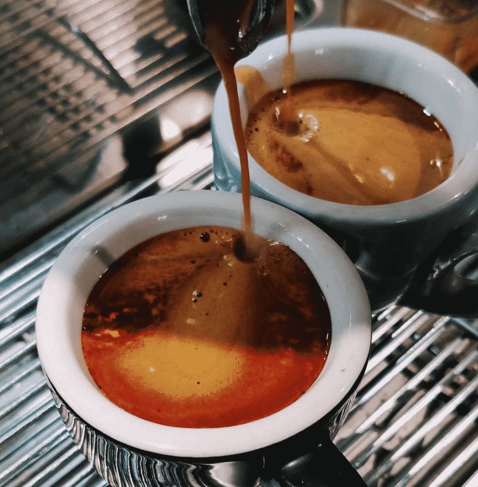

Coffee shop
The 10 best coffee shops in the world :
1. The Barn Roastery – Berlin, Germany
The Barn is a leading coffee roaster known all over Europe and has been driving the speciality coffee movement forward since 2010. Drinking coffee in their shop at source is one of the greatest culinary experiences you’ll have in Berlin.
2. Mel Coffee Roasters – Osaka, Japan
Mel Coffee Roasters is a specialty coffee shop in Shinmachi who serve Melbourne-inspired brews that are freshly roasted on a vintage 5kg Probat Roaster. The coffee itself is rich and comes in a variety of blends, and you can also attend coffee classes to learn all about the craft.

3. Peixoto Coffee Roasters – Chandler – Arizona, USA
Coffee here comes from the owner’s family farm in Brazil, Fazenda Sao José da Boa Vista.
At Peixoto (pronounced pay-sho-tow), they grow their own coffee, import it and roast it especially for the store. A true crop-to-cup experience that tastes incredible. It’s a sustainable family business that is an absolute delight.
You can also buy bags to take home, but with the coffee store looking as good as it is, you’ll be tempted to take a seat
5. NEGRO Cueva de café – Buenos Aires, Argentina
A wonderfully comfortable and cosy cafe that does great baked goods, breakfasts and lunch. The food might draw you in at first, but it’s the coffee you’ll be wanting to stay for. While everything they do is superb, look out for their espresso as something that simply can’t be missed.
